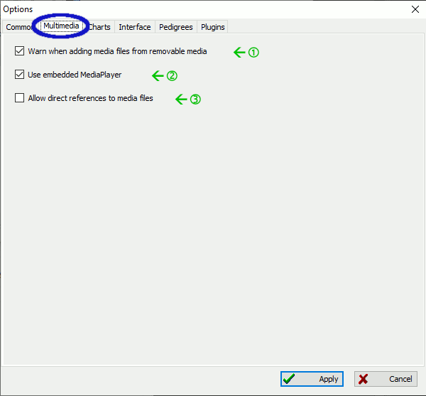
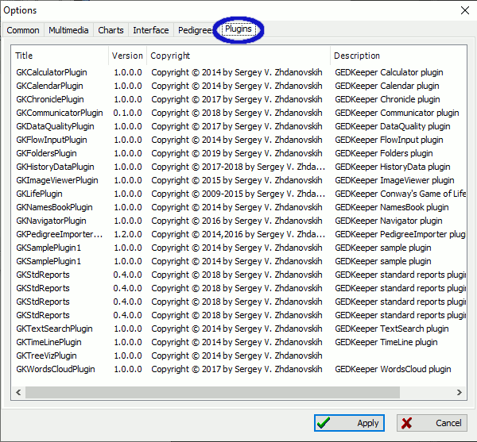

Internet
Set up these settings when you access the Internet via a proxy.
Use proxy
Check this if using a proxy to access the Internet.
Server
This is the name of the server.
Port
This is the port number to use.
Login
This is the login name.
Password
The password needed to access the proxy server.
Files backup
Controls if backups of the current database are performed.
not
If selected then no backups of the database is performed.
only previous file
If selected then only a single backup is made each time the database is saved.
backup each file revision
If selected then every time the database is saved a new backup is created.
Autosave every
If checked then the database is automatically saved in the identified minutes.
Other
Here are miscellaneous options that control how the startup process is handled.
Show tips on startup
Currently this shows birthday reminders on application startup.
Load at startup recent opened files
If checked then the last file used is automatically opened.
Automatically check for updates
If checked then GEDKeeper will check to see if a new version is available. If found, then a message is displayed.
Language
Controls which language will be used in the interface. Restarting is not required, but you must click "Apply" for this to take effect.
Geocoder
Controls which mapping system is used for maps generated.
Multimedia

Warn when adding media files from removable media.
If checked then a warning will be shown if a media file is on removable media such as a CD, DVD, or USB stick.
Use embedded MediaPlayer
If checked then GEDKeeper's media player will be used. If unchecked, then the system default viewer for media is used.
Allow direct references to media files
If checked then media files are not copied to the subdirectory where the database is kept. Instead a direct reference to where the media is located is used. Note: this could make transferring your database to another location more difficult.
Charts
Trees
There are two setting groups for family tree generation: how persons are represented in the tree and how the tree appears on a render target.
Show individuals in tree
Here you define what data you will see in the tree: last name, first name and surname, birthday and obit, and what part of dates.
Surname
If checked then the surname, if available, will be rendered.
Name
If checked then the first name, if available, will be rendered.
Patronymic
If checked then the patronymic, if available, will be rendered.
Separate lines
If checked then each line of text is separated by vertical space.
Birth date
If checked then the date of birth, if available, will be rendered.
Death date
If checked then the date of death, if available, will be rendered. If checked then you can choose to only show the years.
Date of marriages
If checked then any dates of marriage will be rendered.
Kinship
When this option is on, every person has a visible relation degree—which is calculated on each tree rebuild relative to the central person in the tree.
Additional symbols
This renders special symbols for some categories of people. There are special icons for veterans of the World War II, died, veterans of Labor, cavalier of Cross of St. George, and repressed. These categories are defined in the user-defined reference section in the person editor.
Tree decorative
Controls some additional graphical elements and shadows.
Show portraits
If checked then the person's portrait, if available, is shown. If checked, you can also choose to use a default portrait.
Inverted tree
If checked then the top-level of the tree is located at the bottom.
Hide died in childhood
This option becomes helpful when you handle several sources, because it can reduce the number of visible persons and make your task much simpler.
Show places
If checked, and one or more places were provided, then they are rendered.
Hide unknown spouses
If checked, and the spouse is not known, then the spouse placeholder is not rendered.
Check tree size allowed
TODO: NEED INFORMATION
Decor
This setting group defines colors and the main font used in tree rendering.
Man
Click here to choose the color for a person identified as a man.
Woman
Click here to choose the color for a person identified as a woman.
Unknown sex
If a sex was not identified, then this color will be used.
Divorcee husband
A divorced husband (man) will be shown with this color.
Divorcee wife
If the person is a divorced wife (woman) then this color will be used.
Font
Controls which font is used for generated charts. Click here and a list of all available fonts on your system is shown.
Spacings
Controls a set of spacings on the charts in points (dots).
Margins
Specifies the margins on each side of the chart.
Branch distance
The distance between each branch on the chart.
Generation distance
The vertical distance between each generation.
Spouse distance
The horizontal spacing between the spouses.
Ancestors Circle
Controls visual characteristics of the Ancestors Circle pedigree.
Circle 0
Controls the color for the first (innermost) circle.
Circle 1
Controls the color for the second circle.
Circle 2
Controls the color for the third circle.
Circle 3
Controls the color for the fourth circle.
Circle 4
Controls the color for the fifth circle.
Circle 5
Controls the color for the sixth circle.
Circle 6
Controls the color for the seventh circle.
Circle 7
Controls the color for the eighth circle.
Text color
Specifies the color of the text. Be sure it is not the same as "Back color".
Back color
Specifies the background color for the text. Be sure it is not the same as "Text color".
Lines color
Sets the color for the lines between circle segments.
Hide empty segments
Segments without data are not rendered.
Arc text
If checked then the text is shown in an arc fashion to follow the curvature of a segment. Otherwise text is drawn completely horizontal or vertical.
Interface
Controls characteristics of the user interface.
All lists
Controls characteristics for every list that is shown.
Name format in lists
Surname_Name_Patronymic
The surname, name, and patronymic are separated by an underscore.
Surname; Name_Patronymic
The surname and name are separated by a semi-colon. The name and patronymic are separated by an underscore.
Surname; Name; Patronymic
The surname, name, and patronymic are separated by a semi-colon.
Date formats in lists
DD.MM.YYYY
Dates will be shown in the following order: day, month, then year. Each segment is separated by a period.
YYYY.MM.DD
Dates will be shown in the following order: year, month, then day. Each segment is separated by a period.
Show calendar near dates
Displays the type of date being used: Gregorian or Julian.
Show date type
TODO: NEED MORE INFORMATION Displays special symbols next to the date: "<" (before), ">" (after), "~" (about), "-" (between), etc.
Additional names
Extended women's surnames
Controls how women's names are displayed if they are married. As an example, we will use the name Jane whose maiden name is Smith and is now Johnson.
Format "Maiden (Married)"
Example: Jane Smith (Johnson)
Format "Married (Maiden)"
Example: Jane Johnson (Smith)
Format "Maiden"
Example: Jane Smith
Format "Married"
Example: Jane Johnson
Include address into place text
If checked then the address of a place is shown (if available).
Highlight unparented
Highlighting persons with no parents or family improves navigation through the list. The following color scheme is applied: a white background is used for persons with family and parents, flaxen background for persons without family, and light red for persons without parents. Background colors do not prevent getting information.
Highlight unmarried
If checked then persons who are not married are highlighted.
Autosort children
If checked then when children are shown they will be automatically sorted by birth date.
Autosort spouses
If checked then spouses are automatically sorted by marriage date.
List of individuals
Controls what person characteristics are shown and the order in which they are shown. To change the order, simply selected a characteristic and use the up and down arrows.
Pedigrees
Pedigree generation
Include attributes of individuals
Checks if a person's life events will be included in the pedigree.
Include notes
Checks if text notes from a person's biography will be included in the pedigree.
Includes sources
Determines if the pedigree includes source numbers that reference a person—there is a source list at the bottom of the pedigree.
Including number of generations
TODO: NEED INFORMATION
Pedigree format
These control the level of details for a person description printed in the pedigree. Usually, you would use the Compact format, because the Excess one may contain too much unnecessary information.
Excess
If selected then the pedigrees will show verbose information.
Compact
If selected then less information is shown.
Plugins
This is a list of the plugins that are in use by GEDKeeper. This is for reference only.
